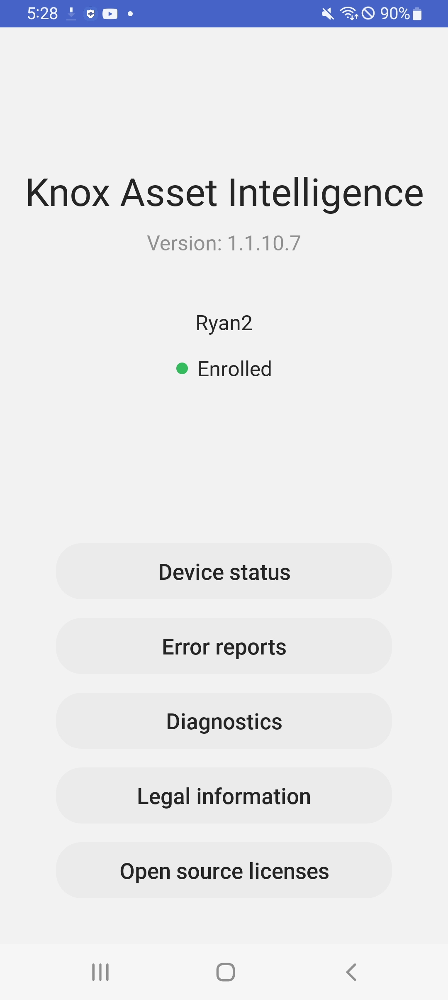
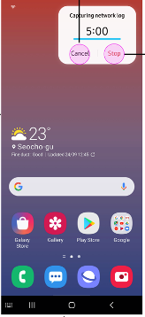
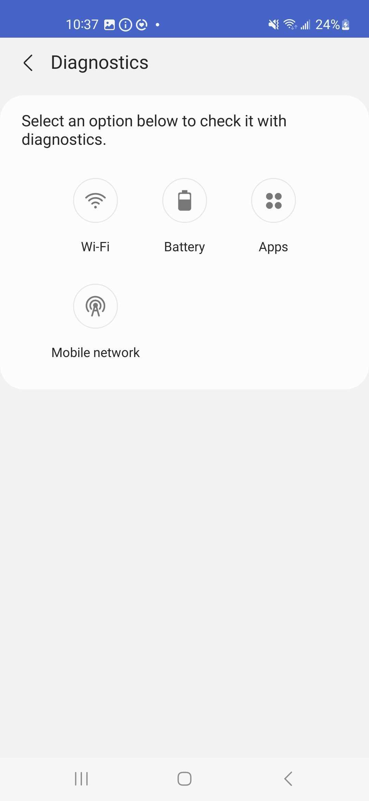
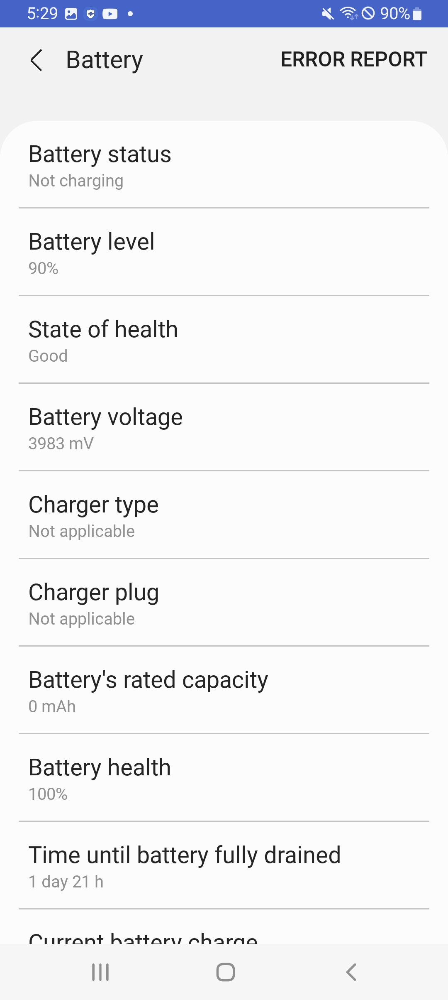
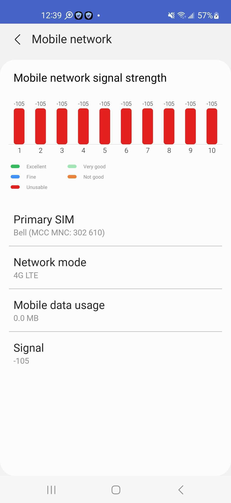

Use the agent app
Last updated April 3rd, 2024
The Knox Asset Intelligence agent runs on the device and is responsible for collecting device information to send to the Knox cloud server.
When a device user launches the agent, the main screen displays the agent version, name of the group the device belongs to, and enrollment status.

The following actions are available:
- Device status. Displays device information, including the IMEI and firmware version.
- Error reports. Generates system logs to submit to the Knox Asset Intelligence console. The device user is prompted to enter a category and description before submission.
- Diagnostics. Displays Wi-Fi, battery, and app information related to the device.
- Legal information. Displays legal disclaimers pertaining to the use of Knox Asset Intelligence.
- Open source licenses. Displays the open source licenses used by Knox Asset Intelligence.
Per Google’s design, whenever the Knox Asset Intelligence agent is active, a Knox Asset Intelligence is running notification displays in the notification drawer. You can hide it through the device’s notification settings.
Device status
When the device user selects Device status from the agent’s main screen, the device’s information is shown. As an IT admin, you can use this information to quickly verify and troubleshoot issues without requesting device logs every time.
The device information includes the following:
- Model name
- Model numbe
- IMEI
- Serial numbe
- Android OS version
- Firmware version
- Android security patch level
- Knox version
- Display resolution
- Display density
- Wi-Fi MAC address
- Bluetooth address
- Storage
- RAM
Error reports
When the device user selects Error reports, system debug logs are generated that can be uploaded to your Knox Asset Intelligence console. The debug logs contain system diagnostics information and system message logs that can help you identify the root cause of an issue. You can also capture tcpdump logs for advanced network troubleshooting between device and app servers. Any uploaded device debug logs are deleted from the Knox Asset Intelligence servers after 30 days by default.
Before submission, the device user must first select one of the following categories for the error report:
- All
- Battery
- App
- Wi-Fi
- Device operation
- Network (TCPDUMP)
Then, they’re prompted to enter a detailed description for the issue. The description is limited to 500 characters.
Once the two fields are filled, the device user can then send the logs to the Knox cloud server. The logs can’t be submitted if either one of the fields is empty. After the device user successfully sends the log file, you can view it in the Diagnostic device logs menu on the Knox Asset Intelligence console.
Send a tcpdump log
This feature is only available on devices running Android 12 (S) or higher.
To help you troubleshoot more complicated network issues, Knox Asset Intelligence uses the tcpdump tool to get network traffic data directly from the device, which device users can then send to you as a tcpdump log. This log records all packet information that the device is transmitting or receiving over the network.
To send a tcpdump log from the device, the device user must use the agent app to do the following:
-
From the app home screen, tap Error reports.
-
Tap the category filter and select Network (TCPDUMP), then tap SEND. A prompt appears, asking if they want to start capturing the log. In the prompt, they can also tap View tutorial to get a demo of the log capture feature.
-
Tap Start capturing. A 5-minute timer appears in the top-right corner, along with two action buttons: Cancel and Stop.
The tutorial always displays when a device user starts capturing a tcpdump log for the first time.

-
While the 5-minute timer is counting down, the device user needs to reproduce the network issue they encountered.
-
If they are able to reproduce the issue before the timer ends, they can tap Stop, then tap Send to send the log back to their IT admin.
-
If they could not reproduce the issue, they can still tap Stop before the timer ends, then tap Start over to begin a new 5-minute timer and try again.
-
If they tap Cancel before the timer ends, they will return to the Error reports screen and a Couldn’t reproduce status message will be sent to the IT admin.
-
If the timer ends without any action, the timer disappears and a message lets them know that the timer expired and that the network log could not be captured. After dismissing the message, a Couldn’t reproduce status message gets sent to the IT admin.
-
Tcpdump logs are deleted after 30 days by default, but you have the ability to delete them manually in the Knox Asset Intelligence console.
Alternatively, if you request a tcpdump log from the console, the device user will get a prompt on their screen letting them know that an admin is making the request. The user can tap Start capturing and follow the same workflow described above to send or cancel the log.
Diagnostics
To help troubleshoot issues further, device users can use the agent’s Diagnostics feature to get more detailed information about their device’s Wi-Fi, battery, and app-related behavior, then take actions to share this information or send error reports to IT admins for further analysis.
To begin, the device user needs to tap the Diagnostic button on their app home screen, then tap the option that they want to perform diagnostics with:
- Wi-Fi
- Battery
- Apps
- Mobile network

Wi-Fi
After selecting Wi-Fi, two tabs are available at the bottom of the screen.
-
Status. Displays the signal strength, band, SSID, signal, IP, device MAC address, and access point MAC address of device’s current Wi-Fi connection. If Wi-Fi roaming is detected, additional roaming information is displayed. The signal strength is shown in real-time as a graph, with three statuses indicating the network latency. The status ranges are as follows:
Status Strength Excellent -67 dBm or higher Very good -68 dBm to -70 dBm Okay -71 dBm to -80 dBm Not good -81 dBm to -90 dBm Unusable -91 dBm or lower -
History. Displays the device Wi-Fi connection history over the last 7 days. The history is sorted in reverse chronological order (with the newest connection event at the top), and each entry includes the connection’s:
-
Date & time
-
BSSID and SSID
-
OUI (Organizational Unique Identifier)
-
Band
-
RSSI (Received Signal Strength Indicator)
-
Link speed.
If no Wi-Fi connections occurred in the last 7 days, a No event message appears on the screen.
-
-
Test. Allows the device user to send various commands to the Wi-Fi network to test for connectivity issues. The results of these tests can be shared with you for troubleshooting purposes.
-
Single Ping. Sends a single ICMP (Internet Control Message Protocol) echo request to the network host. After the device user enters a DNS or IP address, the ping result is returned. For example, if com is entered as the DNS, it tries to request three packets at once. Assuming samsungknox.com receives three packets, the ping result shows 3 packets transmitted, 3 received, 0% packet loss. No packet loss indicates that data is reaching its destination properly. There may be a slight delay before the results are returned.
-
Continual Ping. Sends a looping ICMP echo request to the network host, which you can configure the settings for. After the device user enters a DNS or IP address, the ping result is returned. For example, if com is entered as the DNS, it continuously requests one packet at a time. Assuming samsungknox.com receives six packets, the ping result shows Sent: 6, Received: 6, Missed: 0. No packet loss indicates that data is reaching its destination properly. There may be a slight delay before the results are returned.
-
NSLookup. Queries the DNS servers for the domain mapping to the IP address. After the device user enters a DNS or IP address, the DNS records for the domain name are returned. For example, if com is entered as the DNS, its host name, canonical name, IP address, and network latency are shown.
-
Network status. Displays the details of the device’s connected network, including the host name, domain, IP address, mask, broadcast, gateway, DHCP info, WLAN DNS, and lease time. If the device is using a proxy, that information is also displayed.
-
Scan SSID. Displays the signal strength, access point MAC address, and band of the SSID the device is currently connected to.
-
Known network. Displays a list of all Wi-Fi networks the device has previously connected to.
-
The device user can also generate and send debug logs to you by selecting Error report in the top-right corner of the screen.
Change the continual ping test settings
To change the continual ping settings, the device user can tap the settings next to Continual Ping. The following settings are available:
- Count. The total number of packets to request. The default value is 10, but a number from 4 to 1000 can be entered.
- Interval (ms). The interval of time, in milliseconds, between successive packet transmissions. The default value is 1000, but a number from 200 to 2000 can be entered.
- Timeout (ms). The length of time, in milliseconds, that a response needs to be received within before a connection timeout is reported. The default value is 500, but a number from 10 to 1000 can be entered.
- Max TTL. The maximum amount of time, or time to live (TTL), in seconds, that a packet can exist in a network before being discarded by the router. The default value is 64, but a number from 49 to 255 can be entered.
- Packet size. The size of the packet to request, in bytes. The default value is 64, but a number from 4 to 1472 can be entered.
If the device user sets Packet size as 10, Interval (ms) as 1000 ms, and Timeout (ms) as 500 ms, 10 pings are sent and the interval between each ping is set to 1000 ms. A successful test requires all 10 pings to be received within 500 ms each.
The ping test continues even if the device user leaves the screen, but they can stop it at any time by tapping the stop button. Otherwise, the test automatically stops once the set conditions are met. A notification is also displayed in the notification bar for the duration of the test, which the user can tap to return to the test screen.
Battery
When the device user selects Battery from the Diagnostics menu, the Status and History tabs are shown at the bottom of the screen.
Status
The Status tab provides information on the following battery-related data points:
- Battery status. Indicates whether the device is connected to a charger or not.
- Battery level
- State of health. The overall health of the device’s battery, defined as Good, Normal, or Bad.
- Battery voltage
- Charger type
- Charger plug
- Battery’s rated capacity
- Battery health. The percentage of the battery’s original charge it can currently hold.
- Time until battery fully drained/Time until battery fully charged — When the device is not charging, the first option is shown. Otherwise, the second option is shown.
- Current battery charge
- Current battery capacity
- Average current
- Current right now. When the device is charging, displays the charging current in milliamperes (mA).

Device users can also generate and send debug logs to you by tapping Error report in the top-right corner of the screen.
History
The History tab shows historical information about how the device’s battery was used, spanning the last 14 days. An entry is logged every time the battery charge increases, and includes the following data points:
- Date
- Timestamp
- Battery percentage
- In and out amperage
- Battery voltage
- Charger plug
- Charge type
- Time until fully charged
The device user can tap and hold an entry, then tap Remove data to hide that entry. Note that any entries deleted this way can’t be restored. To see more battery usage information from the last 7 days, the user can also tap Settings (gear icon) in the top right corner to view the following additional options:
- Battery usage trend takes the user directly to Device care in the device settings.
- Share with your admin allows users to upload a log file — containing the battery’s charging history — to the Knox Asset Intelligence console for further analysis. The log file contains the following information:
- Date — The date that the log was created
- Timestamp — The time the log event occurred.
- Battery charge (%) — The battery charge percentage at the time of log creation.
- In and out Amperage (mA) — The battery current/amperage (in milliamps) measured at each log event. Negative values indicate battery discharging, while positive values indicate battery charging.
- Battery Voltage (mV) — the battery voltage level at time of log event
- Charger Plug — the type of plug used to charge the battery at time of event. Available options:
- AC — battery was plugged in to a wall charger.
- Wireless — battery was plugged in to a wireless charger (charging station).
- USB — battery was plugged in to a computer’s USB port.
- Pogo — device was plugged in to a charging dock with a Pogo connection (Android 13 and higher)
- N/A — Device was not plugged in.
- Charge Type — the type of charge occurring on the battery at time of log event:
- USB — device was charging through USB power.
- Normal — device was charging at a normal charge rate through AC power.
- FAST (AFC) — device was charging at a fast rate using Samsung’s Adaptive Fast Charge technology.
- FAST (PD) — also known as USB Power Delivery (PD). Device was being charging at a fast using a PD-enabled USB-C port.
- Pogo — device was charging through a charging dock with a Pogo connection (Android 13 and higher).
- Wireless — device was charging through a wireless charging station.
- N/A — device was not charging.
- Time until fully charged — the remaining time until battery was going to be fully charged, at time of log event.
Apps
If the device user selects Apps from the Diagnostics menu, they will see two tabs at the bottom of the screen: Usage (default) and Event.
Usage tab
The Usage tab displays the top 5 apps that consume the most battery and network resources on the device. When the device user selects the Usage tab, they will also see two tabs near the top of the screen for Battery and Network respectively. Tap either of the top tabs to view the top 5 apps that consume the most resources.
Events tab
The Events tab lets you know which apps have cause the most issues on the device. The following three categories of app issues are available:
- Application not responding
- Force close
- Abnormal event
Device users can select a category to see a list of apps that reported that issue type over the last 24 hours.
For each app, the app’s version number, as well as the number of times the issue occurred are shown. If an app reported multiple issue types, the total number of occurrences is shown along with a breakdown by issue type. Users can also send a debug log file by tapping Error report in the top right corner of the screen.
Mobile network
Device users can view mobile network diagnostic information like total data consumption for each SIM card in their device, and network signal strength. To view mobile network diagnostic information, go to the app home screen, tap Diagnostics > Mobile network.

On the Mobile network screen, a chart provides the signal strength and status over the last 10 seconds, with each segment of the chart representing one second. You’ll see the following statuses on the chart:
| Status | Signal strength |
|---|---|
| Excellent | -67 dBm or higher |
| Very good | -68 dBm to -70 dBm |
| Fine | -71 dBm to -80 dBm |
| Not good | -81 dBm to -90 dBm |
| Unusable | -91 dBm or lower |
| N/A | Lower than -140 dBm, or no data |
Below the chart, users can view their network information like the carrier’s name, network mode, and signal strength.
On this page
Is this page helpful?